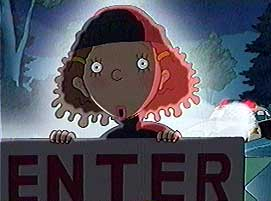
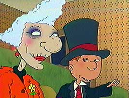
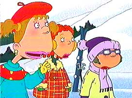
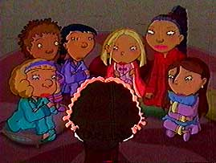
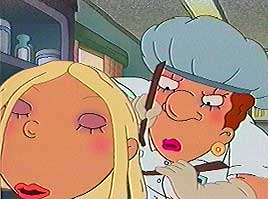
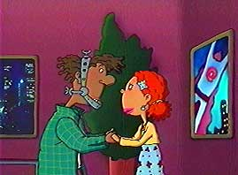

|

|
Episode One:
GINGER THE JUVEY
Written by Emily Kapnek
Directed by Sylvia Keulen
When Ginger is invited to Courtney Gripling's party, she's under pressure to find the perfect gift. but will she resort to stealing?
This episode introduces all the main cast of the show, including Macie, Dodie, Carl, Miranda and Hoodsey.
|
|

|
Episode Two:
CARL AND MAUDE
Written by Emily Kapnek
Directed by Cathy Malkasian
When Ginger and her friends go to the senior's home to do community service, Carl tags along and meets Maude, a granny who loves playing pranks and is every bit as disgusting as he is. Is true love blooming for Ginger's younger brother?
And how will Courtney handle Carl's new flame when they both come over for dinner at the Foutley house?
|
|

|
Episode Three:
STEALING FIRST
Written by Emily Kapnek
Directed by carol Millican
Why is Ginger so nervous about going on the ski trip with her school?
Perhaps it's because she can't ski, or maybe it's because Carl and Hoodsey snuck along to cause mischief of their own, or maybe it's because Courtney is trying to get her to kiss that French foreign exchange student on the ski lift...
Hmmm, doesn't seem like there's anything to worry about at all!
|
|

|
Episode Four:
SLEEP ON IT
Story by Emily Kapnek, Evan M. Katz, & Kate Boutilier
Teleplay by Evan M. Katz & Kate Boutilier
Directed by Frank Marino
Courtney proves to be the one out of the loop when she looks to Ginger to show her how to play all the party games at the first Gripling sleep-over.
Will Ginger show the popular kids the fine art of the slumber party, or will Carl and Hoodsey spoil all the fun?
|
|

|
Episode Five:
OF LICE AND FRIENDS
Story by Emily Kapnek & Sheila M. Anthony
Teleplay by Sheila M. Anthony
Directed by Ron Noble
Dodie gets the job of making the school announcements and uses it as a forum to reveal gossip about Lucky Junior High.
When a lice scare hits the school and Dodie finds out Courtney has been infected, will she make the announcement or will Ginger be able to convince her to keep her mouth shut?
|
|

|
Episode Six:
DARE, I DARREN
Written by Emily Kapnek
Directed by Dean Criswell
When Miranda suggests that Ginger and Darren are more than just friends, she begins to see him in a different way.
Will Ginger and Darren bring their friendship to another level, or will these newfound feelings put a strain on their standing as best pals?
|